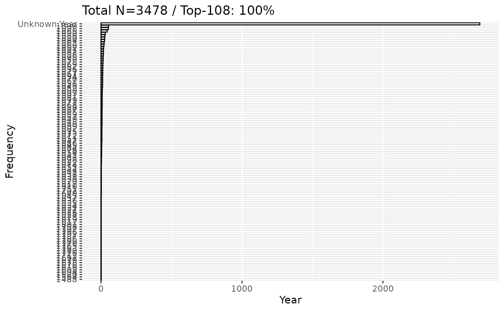

This R Markdown document provides a comprehensive guide to querying
and analyzing Viola collection data using the Finna API and the
fetch_viola_records function.
Viola Collection in Finna
The fetch_viola_records function allows batch processing
of data from the Viola collection in Finna, across multiple year ranges,
and handles records without date information.
Example Usage
Fetch Data Across Year Ranges
The following example fetches data from the Viola collection for the year ranges: 0–1699, 1700–1799, and 1800–1899.
library(finna)
# Fetch records
results <- fetch_viola_records(
base_query = "*",
base_filters = c('collection:"VIO"'), # Filters for the Viola collection
year_ranges = list(c(1700,1705)), # Year ranges to query
include_na = TRUE, # Include records with missing dates
limit_per_query = 100000, # Maximum records per query
total_limit = Inf, # Overall record limit
delay_after_query = 3 # Delay between API calls
)
# View the number of records fetched
print(nrow(results))## [1] 2690
head(results)## # A tibble: 6 × 10
## id Title Author Year Language Formats Subjects Library Series last_indexed
## <chr> <chr> <chr> <chr> <chr> <chr> <chr> <chr> <chr> <chr>
## 1 fikk… [Kor… NA 1702 fin Nuotti arkisto… Kansal… NA NA
## 2 fikk… [Yxi… NA 1702 fin Nuotti arkisto… Kansal… NA NA
## 3 fikk… [Gra… NA NA fin Nuotti arkisto… Kansal… NA NA
## 4 jykd… Soti… NA NA fin Äänite… NA Jyväsk… NA NA
## 5 fikk… Demo NA NA zxx Äänite… NA Kansal… NA NA
## 6 fikk… Boog… NA NA zxx Äänite… NA Kansal… NA NAFetch Records Without Dates
You can also fetch records missing the main_date_str
field:
# Fetch undated records
undated_records <- search_finna(
query = "*",
filters = c('collection:"VIO"', '-main_date_str:*'),
limit = Inf
)
# View undated records
print(undated_records)## # A tibble: 2,688 × 10
## id Title Author Year Language Formats Subjects Library Series
## <chr> <chr> <chr> <chr> <chr> <chr> <chr> <chr> <chr>
## 1 fikka.5207343 [Gradua… NA NA fin Nuotti arkisto… Kansal… NA
## 2 jykdok.1827911 Sotiemm… NA NA fin Äänite… NA Jyväsk… NA
## 3 fikka.4941590 Demo NA NA zxx Äänite… NA Kansal… NA
## 4 fikka.4941603 Boogie … NA NA zxx Äänite… NA Kansal… NA
## 5 fikka.4941825 Close-up NA NA zxx Äänite… NA Kansal… NA
## 6 fikka.4997308 [Demo] NA NA zxx Äänite… NA Kansal… NA
## 7 fikka.4997735 [Demo] NA NA zxx Äänite… NA Kansal… NA
## 8 fikka.5206900 Oulu Ho… NA NA mul Äänite… amerika… Kansal… NA
## 9 fikka.4997560 [Demo] NA NA eng Äänite… NA Kansal… NA
## 10 fikka.4994228 [Demo] NA NA zxx Äänite… NA Kansal… NA
## # ℹ 2,678 more rows
## # ℹ 1 more variable: last_indexed <chr>Data Visualization
The Viola collection data can be visualized using metadata refinement and plotting functions.
Author Distribution
library(finna)
# Refine metadata and visualize author distribution
refined_data <- refine_metadata(results)
visualize_author_distribution(refined_data)
Word Cloud for Titles
# Create a word cloud of titles
visualize_word_cloud(refined_data, "Title")